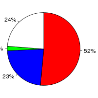
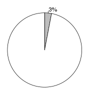
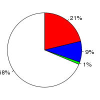

Arabidopsis thaliana (Arabidopsis thaliana, TAIR10) and Glycine max (Glycine max, V1.0) were aligned using the BlastZ alignment algorithm (Schwartz S et al., Genome Res.;13(1):103-7, Kent WJ et al., Proc Natl Acad Sci U S A., 2003;100(20):11484-9) in Ensembl release 76. Arabidopsis thaliana was used as the reference species. After running BlastZ, the raw BlastZ alignment blocks are chained according to their location in both genomes. During the final netting process, the best sub-chain is chosen in each region on the reference species.
Full list of pairwise alignments| Gap open penalty (O) | 400 |
| Gap extend penalty (E) | 30 |
| HSP threshold (K) | 3000 |
| Threshold for gapped extension (L) | |
| Threshold for alignments between gapped alignment blocks (H) | |
| Masking count (M) | |
| Seed and Transition value (T) | 1 |
| Additional parameters | |
| Scoring matrix (Q) | Default |
Number of alignment blocks: 106030
| Genome coverage(bp) | Coding exon coverage (bp) | |
|---|---|---|
| Arabidopsis thaliana |
|
 |
| Covered: 36,320,069 out of 119,667,750 | Matches: 17,292,574 out of 33,462,323 | |
| Uncovered: 83,347,681 out of 119,667,750 | Mis-matches: 7,669,050 out of 33,462,323 | |
| Insertions: 573,195 out of 33,462,323 | ||
| Uncovered: 7,927,504 out of 33,462,323 | ||
| Glycine max |  |  |
| Covered: 30,754,165 out of 973,344,380 | Matches: 13,835,778 out of 64,476,920 | |
| Uncovered: 942,590,215 out of 973,344,380 | Mis-matches: 6,063,013 out of 64,476,920 | |
| Insertions: 558,993 out of 64,476,920 | ||
| Uncovered: 44,019,136 out of 64,476,920 |